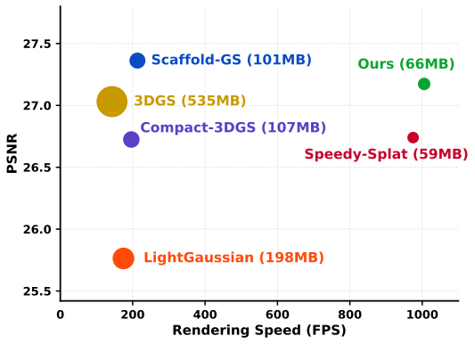
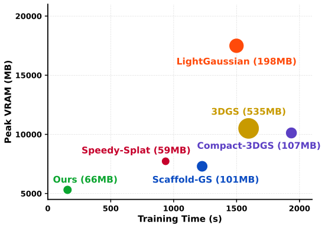
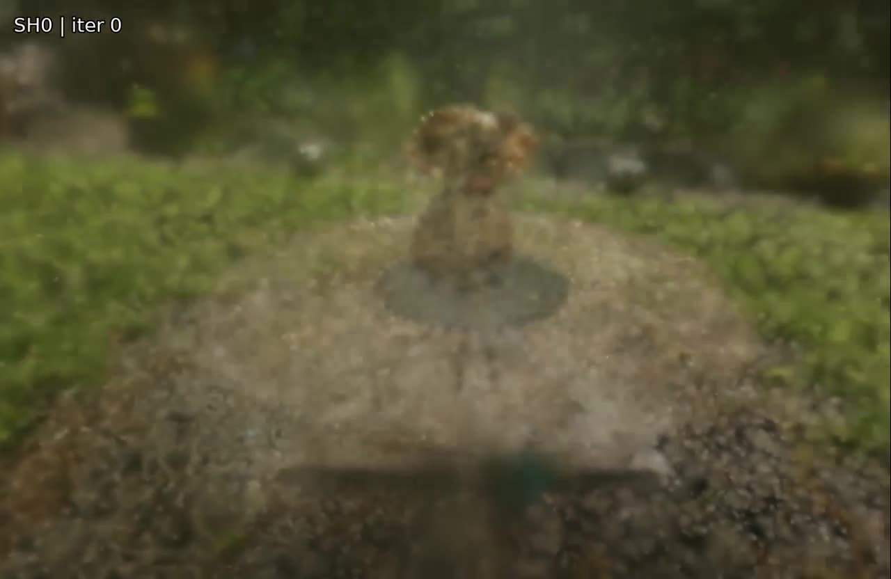
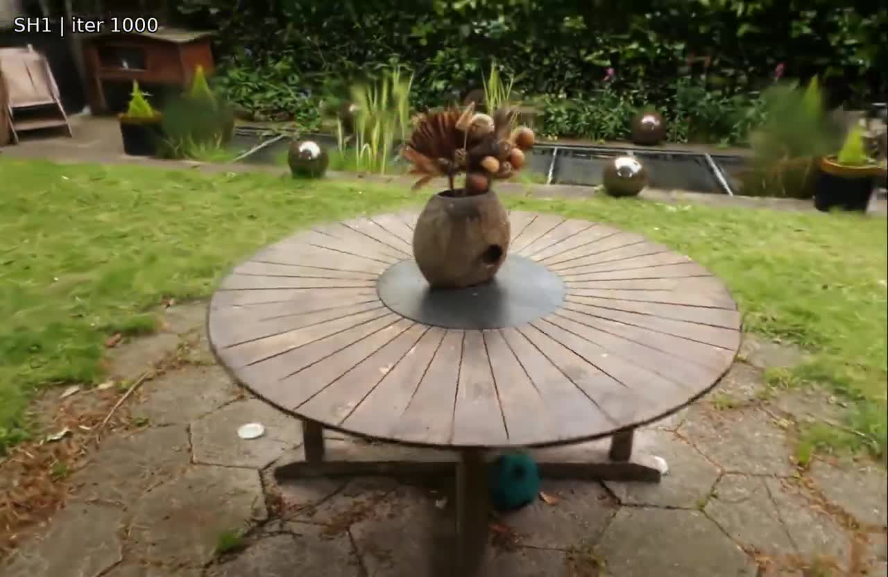
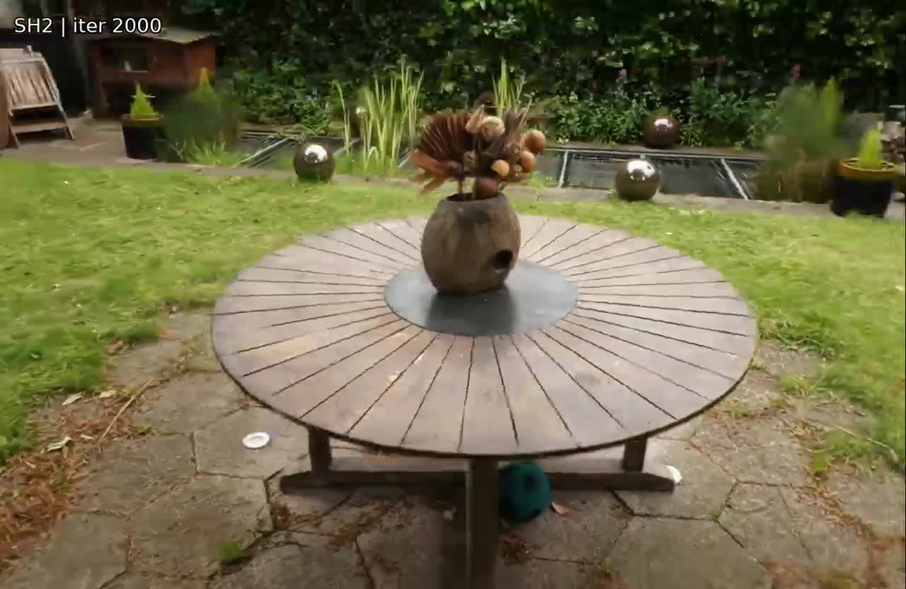
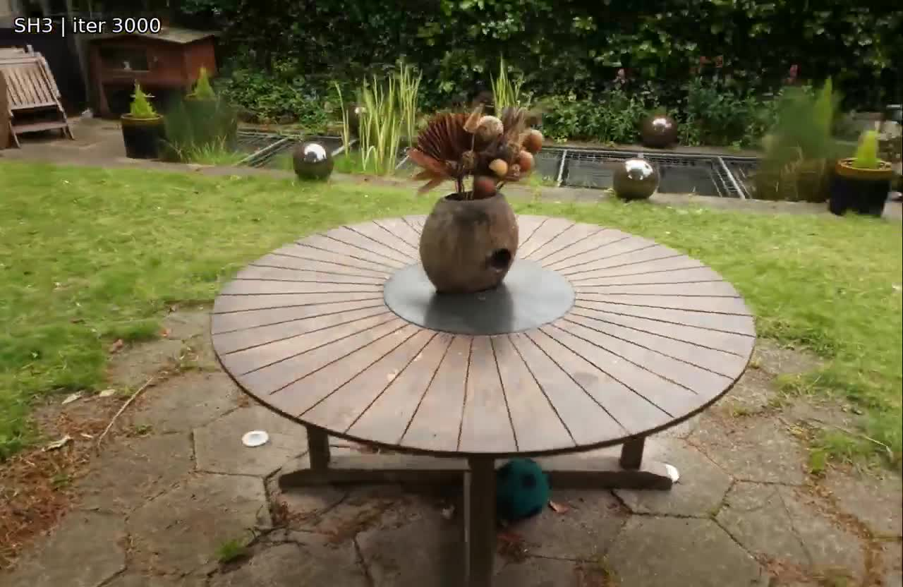
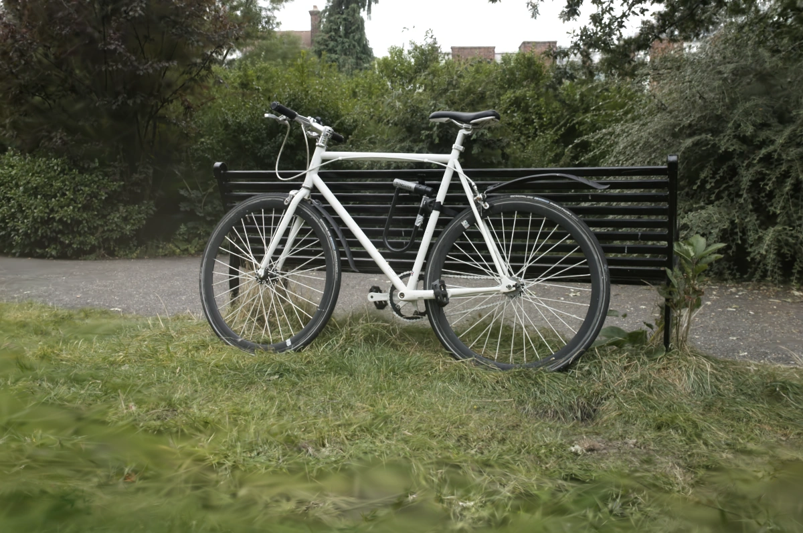
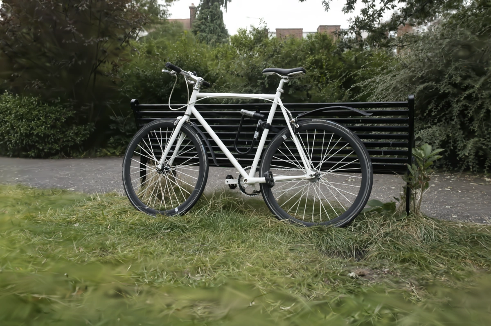

Ours vs 3DGS
Ours vs Speedy-Splat
Compared with 3DGS and Speedy-Splat, GADO-GS retains competitive visual fidelity while substantially reducing training time and, depending on the scene, using fewer Gaussians for the final representation.
Results
We evaluate GADO-GS across the Mip-NeRF 360, Tanks & Temples, and Deep Blending benchmarks. The dataset-level tables report reconstruction quality together with training time, peak VRAM, rendering throughput, model storage, and the final Gaussian count. Representative per-scene views complement these averages with training-time, FPS, and Gaussian-count comparisons against 3DGS and Speedy-Splat.
| Method | Time ↓ | VRAM ↓ | FPS ↑ | Size ↓ | Gaussians ↓ | PSNR ↑ | SSIM ↑ | LPIPS ↓ |
|---|---|---|---|---|---|---|---|---|
| Scaffold-GS | 1791.7s | 10682.0MB | 141.3 | 171.7MB | 570K | 27.75 | 0.813 | 0.226 |
| LightGaussian | 1839.4s | 16207.1MB | 159.4 | 266.9MB | 1128K | 27.08 | 0.806 | 0.238 |
| Compact 3DGS | 2637.3s | 12722.4MB | 159.1 | 124.7MB | 1435K | 26.99 | 0.799 | 0.243 |
| Speedy-Splat | 1140.7s | 9976.2MB | 831.5 | 74.8MB | 316K | 26.97 | 0.787 | 0.289 |
| 3DGS | 2072.9s | 12344.9MB | 123.3 | 646.4MB | 2733K | 27.48 | 0.816 | 0.215 |
| Ours | 180.7s | 6049.1MB | 892.3 | 89.0MB | 362K | 27.49 | 0.798 | 0.260 |
| Method | Time ↓ | VRAM ↓ | FPS ↑ | Size ↓ | Gaussians ↓ | PSNR ↑ | SSIM ↑ | LPIPS ↓ |
|---|---|---|---|---|---|---|---|---|
| Scaffold-GS | 800.5s | 3949.0MB | 215.6 | 76.7MB | 254K | 24.04 | 0.853 | 0.174 |
| LightGaussian | 1104.3s | 11799.0MB | 200.1 | 148.2MB | 627K | 23.10 | 0.823 | 0.223 |
| Compact 3DGS | 1294.4s | 7033.0MB | 219.4 | 92.8MB | 838K | 23.33 | 0.834 | 0.200 |
| Speedy-Splat | 703.7s | 5307.0MB | 1095.4 | 43.0MB | 182K | 23.47 | 0.821 | 0.240 |
| 3DGS | 1022.8s | 7020.0MB | 175.4 | 372.2MB | 1574K | 23.80 | 0.853 | 0.169 |
| Ours | 149.6s | 3914.0MB | 996.0 | 57.3MB | 242K | 24.19 | 0.842 | 0.208 |
| Method | Time ↓ | VRAM ↓ | FPS ↑ | Size ↓ | Gaussians ↓ | PSNR ↑ | SSIM ↑ | LPIPS ↓ |
|---|---|---|---|---|---|---|---|---|
| Scaffold-GS | 1087.1s | 7272.0MB | 282.5 | 54.8MB | 182K | 30.29 | 0.910 | 0.253 |
| LightGaussian | 1554.7s | 24467.0MB | 164.0 | 178.9MB | 756K | 27.10 | 0.877 | 0.295 |
| Compact 3DGS | 1875.0s | 10606.0MB | 210.3 | 104.2MB | 1051K | 29.85 | 0.905 | 0.255 |
| Speedy-Splat | 964.5s | 7895.0MB | 997.5 | 59.2MB | 250K | 29.77 | 0.904 | 0.272 |
| 3DGS | 1690.8s | 12147.0MB | 129.8 | 587.6MB | 2484K | 29.76 | 0.907 | 0.238 |
| Ours | 140.5s | 5445.0MB | 1127.5 | 51.8MB | 219K | 29.85 | 0.905 | 0.267 |
| Method | Time ↓ | FPS ↑ | Gaussians ↓ | PSNR ↑ | SSIM ↑ | LPIPS ↓ |
|---|---|---|---|---|---|---|
| vanilla 3DGS | 2645.7s | 118 | 1595K | 30.74 | 0.926 | 0.129 |
| w/o GADO | 2014.7s | 648 | 304K | 31.16 | 0.923 | 0.139 |
| w/o PSA | 1674.0s | 639 | 302K | 31.20 | 0.923 | 0.139 |
| w/o VGC | 229.7s | 101 | 686K | 31.00 | 0.927 | 0.128 |
| Full (Ours) | 237.3s | 674 | 255K | 31.85 | 0.929 | 0.126 |


Abstract
3D Gaussian Splatting (3DGS) enables high-quality novel view synthesis with real-time rendering, but its representation construction remains computationally expensive and often produces an unnecessarily large Gaussian population. We identify an important source of this inefficiency as geometry-appearance competition: geometry-related parameters, view-dependent appearance, and adaptive density control respond to the same image-space residual, allowing premature appearance fitting to interfere with structural optimization and encourage redundant Gaussian growth. To address this problem, we propose GADO-GS, a unified structure-first training framework that coordinates differentiated parameter updates, progressive spherical-harmonic activation, and auxiliary-view geometric consistency. This design prioritizes structural formation before the full appearance capacity is released and guides the Gaussian population toward a compact representation during training. It introduces no modification to the standard Gaussian representation or rasterizer at inference. Experiments on Mip-NeRF 360, Tanks & Temples, and Deep Blending show that GADO-GS reduces wall-clock training time by 10.1×, increases rendering throughput by 7.2×, and reduces model storage by 8.4× relative to vanilla 3DGS, while maintaining competitive reconstruction quality. GADO-GS therefore improves the quality-efficiency-compactness trade-off of 3DGS at the representation-construction stage, without relying on post-training compression.
Method Overview

Pipeline of GADO-GS. GADO applies differentiated schedules to geometry-related and appearance parameters, PSA progressively releases higher-order SH capacity, and VGC incorporates auxiliary-view rendered-depth consistency into geometric regularization and adaptive density control. Their coordination establishes a structure-first training process that reduces geometry-appearance ambiguity and promotes a compact Gaussian representation, while leaving the standard representation and rasterizer unchanged at inference.
Geometry-Appearance Decoupled Optimization. GADO applies role-specific update schedules to geometry-related and appearance parameters within the shared photometric objective.
Progressive SH Activation. PSA releases higher-order spherical-harmonic bands in a predefined coarse-to-fine order: degrees 1, 2, and 3 are activated at iterations 1,000, 2,000, and 3,000, respectively.
View-consistent Geometry Constraint. VGC compares projected-center depth with auxiliary-view rendered-surface depth from two neighboring views. The resulting per-Gaussian signal contributes to consistency regularization and VGC-gated density evolution.
Progressive SH Activation
We visualize how higher-order SH components are progressively activated during training, providing a coarse-to-fine appearance trajectory within the standard Gaussian representation.
Early stages prioritize stable coarse geometry before higher-order appearance components are activated.
As SH order increases, the tabletop texture, flower structure, and background foliage become progressively sharper and more expressive.

SH0 | iteration 0
SH1 | iteration 1000
SH2 | iteration 2000
SH3 | iteration 3000Visual Comparisons
Ours vs 3DGS

3DGS
Speedy-Splat